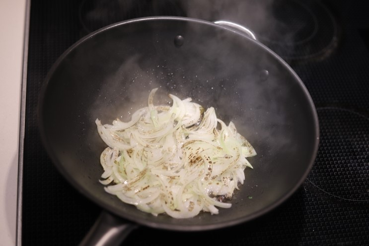
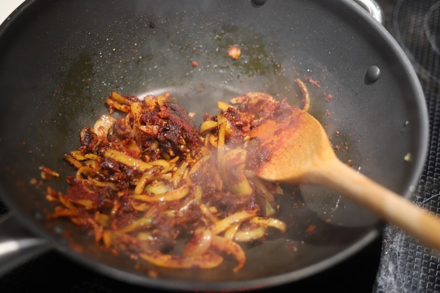
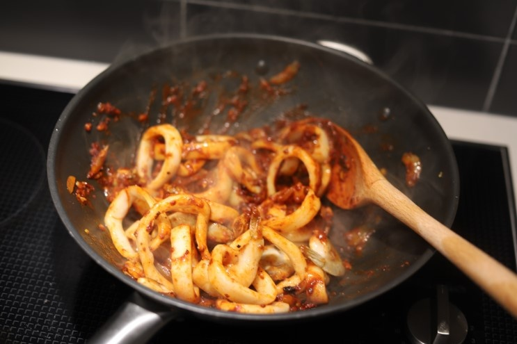
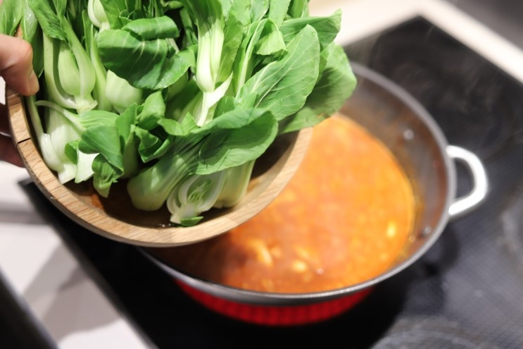

해물짬뽕탕
비가내리거나 눈이오는 날은 특별히 더욱 생각나는 몇 가지 음식이 있는 것 같아요. 비가내릴 때는 부침개 생각이, 또 눈이 새하얗게 쌓여가는 날에는 따뜻한 국물요리가 생각나더라구요. 오늘은 국물요리 하면 많이들 생각하고 떠올리시는 얼큰한 해물짬뽕탕을 만들어볼게요. 전문점 맛에 견주어도 손색없는 깊은맛을 살려 완성 해 보겠습니다. 여기에 취향에 따라 면을 추가하시면 더욱 든든하게 즐기실 수 있겠죠?
조리시간 : 30분 이내
재료
- 재료
양파 1/2개
청경채 100g
손질오징어100g
새우 100g
바지락살 50g
물 600mL
식용유 2T
- 짬뽕양념장 만들기
고춧가루 3T
간장 1T
굴소스 1T
다진마늘 1T
맛술 1T
후추 1/3t
물 4T
조리 순서
| 1. 먼저 양파는 0.5cm 두께로 잘라주시고, 청경채는 깨끗하게 씻어 물기 제거 후 크기에 따라 세로 방향으로 2~4등분 할게요. 청경재를 넣으주시면 달큰한 맛도 더해지고 짬뽕탕의 식감도 더욱 다양해진답니다. 고춧가루3T,간장1T,굴소스1T, 다진마늘1T,맛술1T,후추1/3t,물4T 그리고 위 재료를 넣고 한데 섞어 양념다대기를 만들어주세요. |

|
| 2. 오늘 맛의 핵심, 짬뽕국물만들기 시작해볼까요? 강불에서 4분 예열한 팬에 식용유를 넉넉히 2T정도 넣고 양파 끝이 살짝 타도록 볶아주세요. 슬쩍 탄 양파맛이 불향을 더해줘요. |  |
| 3. 준비한 다대기를 넣고 바짝 타지않게 잘 저어가며 볶아주세요. 충분하게, 3분정도 볶을게요. |  |
| 4. 강불을 계속 유지 해 주시고, 오징어,새우,바지락살을 넣고 바짝 한 번 더 볶아주세요. |  |
| 5. 이제 물600mL를 붓고, 준비한 청경채를 넣어 4분동안 우르르 끓여주시면 완성! |  |